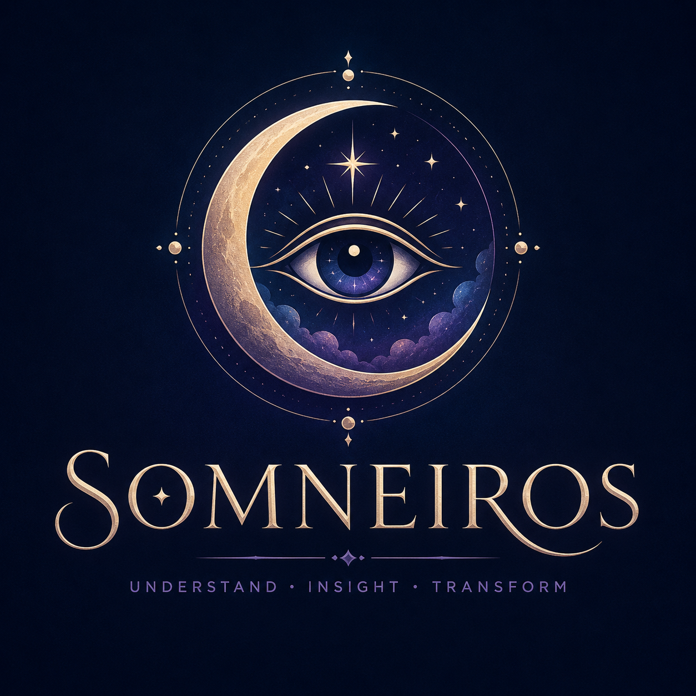

Somneiros offers reflective possibilities, not diagnosis, prediction, or medical advice.

Record the dream. Notice the pattern. Explore what it may mean to you.
Interpret a DreamDREAM INTERPRETER
What happened in your dream?
Describe the setting, people, emotions, symbols, and anything that felt unusually vivid.
PRIVATE JOURNAL
Your saved dreams
Entries remain in your browser unless you export or delete them.
DID PREVIEW
Dream symbol explorer
Search a starter set of symbols. The Colab notebook is designed to expand this into the Dream Interpretation Database.
Somneiros
Somneiros combines a private dream journal, symbolic pattern exploration, and a future research-backed interpretation engine.
The long-term goal is to connect cultural, psychological, historical, and personal interpretations without presenting any single meaning as absolute.
Built as a progressive web app. Install it from a supported browser for an app-like experience.